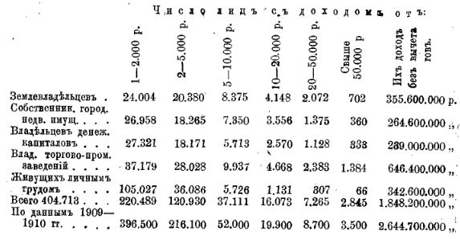
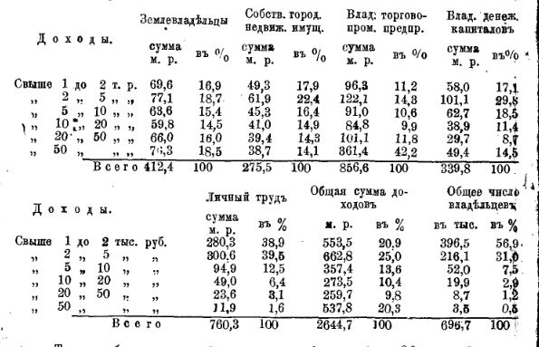
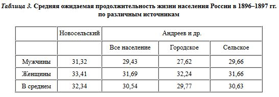
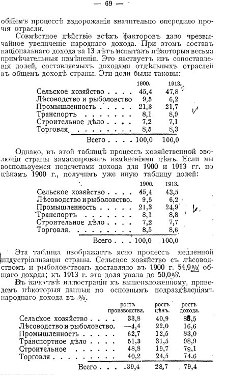

http://arctus.livejournal.com/68807.html
Олег Вещий
"Экономическая мощь" Российской Империи к 1914 году
Раздаются множественные возгласы о том, что Российская Империя до Октября была мощным развивающимся государством с невиданными темпами развития. Насколько эти утверждения корректны, давайте посмотрим.
Что же представляла собой Россия в 1914 г., накануне Первой Мировой войны, резко изменившей вектор ее развития? По большинству объективных показателей она занимала в Европе не совсем почетное место рядом с тогдашней Испанией или чуть впереди нее.
Судите сами, к 1914 г. 86% населения страны проживало в сельской местности, сельское хозяйство производило 58% продукции народного хозяйства, т.е., вопреки распространяемому Говорухиным мифу о продовольственном изобилии в царской России, один крестьянин с трудом кормил себя и плюс еще 0,2 горожанина. В этой ситуации экспорт сельхозпродукции производился по циничному принципу, сформулированному еще в начале 90-х годов XIX в. министром финансов Вышеградским: "Не доедим, но вывезем". (о показателях российского с/х в 1913-м будет показано ниже)
О том, чем оборачивался вывоз хлеба для российского крестьянства, писал в 1880 году известный агроном и публицист Александр Николаевич Энгельгардт:
«Когда в прошедшем году все ликовали, радовались, что за границей неурожай, что требование на хлеб большое, что цены растут, что вывоз увеличивается, одни мужики не радовались, косо смотрели и на отправку хлеба к немцам, и на то, что массы лучшего хлеба пережигаются на вино. Мужики всё надеялись, что запретят вывоз хлеба к немцам, запретят пережигать хлеб на вино. “Что ж это за порядки, — толковали в народе, — всё крестьянство покупает хлеб, а хлеб везут мимо нас к немцу. Цена хлебу дорогая, не подступиться, что ни на есть лучший хлеб пережигается на вино, а от вина-то всякое зло идёт [...]
Пшеницу, хорошую чистую рожь мы отправляем за границу, к немцам, которые не станут есть всякую дрянь. Лучшую, чистую рожь мы пережигаем на вино, а самую что ни на есть плохую рожь, с пухом, костерем, сивцом и всяким отбоем, получаемым при очистке ржи для винокурен — вот это ест уж мужик. Но мало того, что мужик ест самый худший хлеб, он еще недоедает. Если довольно хлеба в деревнях — едят по три раза; стало в хлебе умаление, хлебы коротки — едят по два раза, налегают больше на яровину, картофель, конопляную жмаку в хлеб прибавляют. Конечно, желудок набит, но от плохой пищи народ худеет, болеет, ребята растут туже, совершенно подобно тому, как бывает с дурносодержимым скотом...»
Имеют ли дети русского земледельца такую пищу, какая им нужна? Нет, нет и нет. Дети питаются хуже, чем телята у хозяина, имеющего хороший скот.»
Ни в одной развитой капиталистической стране мира в тот период пропасть между распределением доходов различных слоев населения не была так глубока, как в России. 17% населения, относящихся к эксплуататорским классам города и деревни, имели совокупный доход, равный доходу остальных 83% жителей страны. В селе 30 тыс. помещиков имели столько же земли, сколько 10 млн. крестьянских семей.
Россия в 1901-1914 гг. была ареной вложения иностранных капиталов, а ее внутренний рынок - объектом дележа среди международных финансовых монополий. В результате к началу Первой Мировой войны в руках иностранного капитала находились такие основные отрасли промышленности, как: металлургическая, угольная, нефтяная, электроэнергетика.
Россия была связана с Западом цепью кабальных займов. Иностранный финансовый капитал практически полностью контролировал ее банковскую систему. В основном капитале 18-ти крупнейших банков России - 43% составляли капиталы французских, английских и бельгийских банков. Внешний долг России вырос за 20 лет к 1914 г. в 2 раза и составил 4 млрд. руб. или половину госбюджета. За предшествовавшие Первой Мировой войне 33 года из России ушло за границу в виде процентов по займам и дивидендам иностранным акционерам средств в 2 раза больше, чем стоимость основных фондов всей российской промышленности.
Внешнеэкономическая зависимость неизбежно вела к зависимости внешнеполитической от стран-кредиторов. Внешним результатом резкого усиления такой зависимости к началу XX в. стала целая серия неравноправных экономических и политических договоров: 1904 г. с Германией, 1905 г. с Францией и 1907 г. с Англией. По договорам с Францией и Англией Россия должна была оплачивать свои долги не только деньгами, но и "пушечным мясом", корректируя в угоду им свои военно-стратегические планы (вместо более выгодного для России нанесения главного удара в предстоящей войне по более слабой Австро-Венгрии, она должна была наносить его по Германии с тем, чтобы облегчить положение Франции). Французские и английские правительства, пользуясь "союзническими договорами" с Россией, принуждали царское правительство размещать свои зарубежные военные заказы только на их предприятиях.
Русские промышленники и банкиры, будучи тесно связанными с иностранным капиталом, скатывались очень часто до прямой государственной измены. Так, в 1907 г. в договоре известного российского частного предприятия ВПК объединения Путиловских заводов с аналогичной немецкой фирмой Круппа, среди прочего, предусматривалось ознакомление немецких партнеров с условиями и требованиями русского военного министерства к производимым вооружениям.
Впрочем, даже обычная деловая деятельность русских капиталистов зачастую наносила ущерб России. Так, в 1907 г. управляющий делами крупнейшей угольной монополии России - "Продуголь", в очередном ежегодном докладе с сожалением отмечал, что "периоды угольного голода бывают очень редко, а с ними и период высоких цен". В отличие от угольной, другим российским монополиям голод на свою продукцию удавалось держать гораздо дольше. Так, в 1910 г. металлургическая монополия "Продамет" организовала "металлургический голод", продолжавшийся до начала Первой Мировой войны. В 1912 г. аналогичную операцию проделали нефтяные монополии "Мазут" и "Нобель".
В результате в 1910-1914 гг. цены на металл поднялись на 38%, превысив в 2 раза мировые, на уголь на 54%, на нефть на 200%.
Царское правительство даже не пыталось ограничить этот грабеж страны со стороны отечественных и зарубежных монополий, о чем Совет министров прямо заявил в 1914 г., приняв решение "О недопустимости воздействия на промышленность с целью приспособления ее к спросу".
Причины такого покровительства "рыцарям наживы" были очень просты. В этот период шло интенсивное сращивание правящей полуфеодальной верхушки с отечественным и зарубежным капиталом. К примеру, наместник Кавказа граф Воронцов-Дашков был владельцем большого пакета акций нефтяных компаний. Великие князья являлись акционерами Владикавказской железной дороги, директор Волжско-Камского банка Барк в 1914 г. стал министром финансов и т.д.
Ревностно отстаивали интересы крупных монополий тогдашние российские буржуазные партии и, разумеется, не только из-за идеологических соображений. Например, Азово-Донской банк финансировал партию "кадетов", 52 торговые фирмы Москвы - "Союз 17 октября" ("октябристов").
Процветало "низкопоклонство" перед Западом, пренебрежительное отношение к конкретным достижениям русских ученых и изобретателей. В связи с этим достаточно вспомнить похождения ряда международных авантюристов от науки в тогдашней России. Один из них, некий Маркони, оспаривавший за рубежом различными жульническими приемами первенство А.С. Попова в изобретении радио.
Он не был одинок в своих притязаниях. В 1908 г. некий дель Пропосто, используя оказавшиеся у него в руках чертежи подводной лодки конструкции русского инженера Джевецкого, попытался получить выгодный контракт на ее производство.
Благосклонно относясь к разного рода международным авантюристам, царские чиновники ледяным равнодушием встречали отечественных изобретателей. Мичурин в 1908 г. с горечью отмечал: "У нас в России с пренебрежением и недоверием относятся ко всему русскому, ко всем оригинальным трудам русского человека". С этим же отношением пришлось столкнуться в 1912 г. Циолковскому, обратившемуся в Генеральный штаб с проектом дирижабля и получившему ответ, что он может заниматься им "без каких-либо расходов от казны".
И если таким образом элита правящая относилась к мыслящей элите общества, то можно представить уровень ее отношения к простому народу, что выражалось в социальном законодательстве. Принятое в конце 90-х годов XIX в. законодательное ограничение рабочего дня 11,5 часами продолжало действовать вплоть до Февральской революции 1917 г., в то время, как в США, Германии, Англии, Франции рабочий день в начале XX в. составлял в среднем 9 часов и не превышал 10. Заработная плата русских рабочих была в этот период в 20 раз меньше, чем у американских, хотя производительность труда в различных отраслях производства была меньше в 5-10 раз.
Закон о рабочем страховании 1912 г. распространялся лишь на шестую часть рабочего класса. Пособия за полученные увечья были мизерные, да еще надо было доказывать, что получены они не по своей вине. Выплачивалось пособие 12 недель, а затем живи, как знаешь. Дешево ценилось жизнь и здоровье рабочего в царской России. На государственном Обуховском оружейном заводе в цехах была вывешена "Таблица оценки повреждений организма рабочего". Расценки единовременных пособий за полученные увечья были следующие: за потерю зрения на один глаз - 35 руб., оба глаза - 100 руб., полная потеря слуха - 50 руб., потеря речи - 40 руб.
Ещё более остро стоял в России того времени крестьянский вопрос, который пытался решить Столыпин, исходя из своих представлений о взаимоотношениях русского крестьянства с сельским хозяйством, чем еще более обострил отношения крестьян и власти.
Неудачи основы политической линии Столыпина - реформы в аграрной сфере, - к 1911 г. стали очевидны всем. Все основные составляющие этой реформы, а именно, ликвидация общины и массовое переселение крестьян за Урал на свободные земли, потерпели явный крах. В 1910 г. 80% крестьян по-прежнему оставались в составе общин, правда, после всего происшедшего изрядно разоренные и обозленные. Из отправленных в 1906-1910 гг. за Урал 2 млн. 700 тыс. переселенцев свыше 800 тыс. вернулись полностью разоренными на прежнее местожительство, 700 тыс. нищенствовали по Сибири, 100 тыс. умерли от голода и болезней и лишь 1 млн. 100 тыс. как-то закрепились на новом месте.
Таким образом, социально-политическая напряженность в русском селе, на снятие которой, на словах, были направлены столыпинские реформы, не только не исчезла, но еще больше возросла. Царизм не смог найти в селе надежной политической опоры, к чему он так стремился. Вот собственно, за что заплатил своей жизнью Столыпин.
После его реформ показатели по добыче зерна на душу населения в 1913-м году были такие:
в России - 30,3 пуда
в США — 64,3 пуда,
в Аргентине — 87,4 пуда,
в Канаде — 121 пуд.
Про пресловутый экспорт зерна на удовлетворение пол-Европы: - в 1913 году зарубежная Европа потребила 8336,8 млн. пудов пяти основных зерновых культур, из которых собственный сбор составил 6755,2 млн. пудов (81%), а чистый ввоз зерна — 1581,6 млн. пудов (19%), в том числе 6,3% — доля России. Другими словами, российский экспорт удовлетворял всего лишь примерно 1/16 потребностей зарубежной Европы в хлебе.
Продолжая рассматривать положение России в 1914 г., неизбежно приходишь к проблеме участия России в Первой Мировой войне, которая началась 1 августа 1914 г.
Из всего вышесказанного ясно следует, что никакой самостоятельной роли в этом крупнейшем событии мировой истории Россия иметь не могла. Ей и ее народу предназначалась роль пушечного мяса. И эта роль определялась не только отсутствием политической самостоятельности России накануне Первой Мировой, но тем мизерным экономическим потенциалом, с которым Россия вступила в войну. Громадная Российская империя с населением в 170 млн. человек, или столько же во всех остальных странах Западной Европы вместе взятых, вступила в войну с ежегодным производством 4 млн. т стали, 9 млн. т нефти, 29 млн. т угля, 22 млн. т товарного зерна, 740 тыс. т хлопка.
В общемировом производстве в 1913 г. доля России составляла 1,72%, доля США – 20%, Англии – 18%, Германии – 9%, Франции — 7,2% (это все страны, имеющие население в 2-3 раза меньше, чем Россия).
Последствия такой скудости сказались очень быстро. Накануне войны русская военная промышленность производила 380 тыс. пудов пороха в год, а уже в 1916 г. русской армии потребовалось 700 тыс. пудов пороха, но уже не в год, а в месяц. Уже весной 1915 г. русская армия начала ощущать катастрофическую нехватку боеприпасов и, прежде всего, снарядов, довоенные запасы которых были расстреляны в первые 4 месяца войны, а текущее производство не восполняло их нехватку. Именно это и стало главной причиной поражения русской армии по всей линии фронта в ходе весенне-летней кампании 1915 г.
Военная промышленность царской России не справлялась с поставкой на фронт не только боеприпасов, но и легкого стрелкового оружия, прежде всего винтовок, которых до войны на складах находилось 4 млн. штук, и 525 тыс. ежегодно производили все оружейные заводы империи. Предполагалось, что всего этого количества хватит до конца войны. Однако реальность опрокинула все расчеты. Уже к концу первого года войны ежегодная потребность в винтовках составляла 8 млн. штук, а к концу 1916 г. - 17 млн. Восполнить нехватку винтовок не удалось даже с помощью импорта до самого конца войны.
Использовались материалы К.В. Колонтаева, И. Пыхалова, А.Айдунбекова, М.Соркина
Как говорил известный писатель-эмигрант, убеждённый монархист Иван Солоневич: «Таким образом, староэмигрантские песенки о России, как о стране, в которой реки из шампанского текли в берегах из паюсной икры, являются кустарно обработанной фальшивкой: да, были и шампанское и икра, но — меньше чем для одного процента населения страны. Основная масса этого населения жила на нищенском уровне».
http://arctus.livejournal.com/101270.html
Модно на полном серьёзе говорить о российском экономическом чуде начала XX века. Экономист Кричевский, например, писатель Кожинов и многие другие. Окунаемся в Википедию - источник знаний для множества простых людей и политиков. Она пишет:
"...страна выходит на 4–5 места в мире по абсолютным размерам добычи железной руды, выплавке угля и стали." Давайте проверим.
Открываем "Россия 1913 год.Статистико-документальный справочник" Института Российской истории РАН от 1995 года. Там есть таблица "Производство чугуна и стали на душу населения в России и некоторых странах Запада в 1909—1913 гг. (в пудах)" Из девяти упомянутых там стран Россия находится на безоговорочном 9-м месте, отставая от первого в 15-17 раз, от 8-го - больше чем в два с половиной раза. И так далее.
Прошу ознакомиться. Пройдёмся по "чугуну и стали", промышленности в целом, сельскому хозяйству и скотоводству.
Производство чугуна и стали на душу населения в России и некоторых странах Запада в 1909—1913 гг. (в пудах)
Страна |
Чугун |
Сталь |
|||||||||
|---|---|---|---|---|---|---|---|---|---|---|---|
1909 |
1910 |
1911 |
1912 |
1913 |
1909 |
1910 |
1911 |
1912 |
1913 |
||
| Россия | 1,1 | 1,0 | 1,1 | 1,5 | 1,6 | 0,9 | 0,9 | 0,9 | 1,3 | 1,4 | |
| Австро-Венгрия | 2,4 | 2,4 | 2,5 | 2,4 | 3,3 | 2,4 | 2,6 | 2,9 | 3,2 | — | |
| Германия | 12,4 | 14,0 | 14,2 | 16,4 | 17,5 | 11,6 | 12,9 | 14,0 | 15,9 | — | |
| Франция | 5,6 | 6,3 | 6,8 | 7,5 | 8,2 | 4,7 | 5,4 | 5,7 | 6,3 | — | |
| Соединенное Королевство | 13,6 | 14,1 | 13,3 | 13,2 | 14,2 | 8,2 | 8,9 | 8,9 | 9,1 | — | |
| Бельгия | 13,6 | 14,9 | 17,2 | 18,2 | 20,0 | 11,4 | 12,0 | 12,6 | 15,9 | — | |
| Швеция | 5,0 | 6,7 | 7,0 | ,7,7 | 7,3 | 3,5 | 5,2 | 5,0 | 5,6 | — | |
| США | 17,6 | 18,3 | 15,7 | 19,1 | 19,8 | 16,4 | 17,6 | 15,7 | 20,0 | — | |
| Канада | 6,2 | 6,7 | 7,2 | — | — | 7,0 | 7,4 | 7,6 | — | — | |
Источник: Статистический ежегодник на 1914 год. Под ред. В. И. Шараго. СПб., 1914. С.817.
- Россия далеко на последнем месте. От США отставание в15-17 раз, от предпоследней Австро-Венгрии в 2,5 раз
Доли России, США, Великобритании, Германии и Франции в мировом промышленном производстве (в %)
Страны |
1881—1885 гг. |
1896—1900 гг. |
1913 г. |
|---|---|---|---|
| Россия | 3,4 | 5,0 | 5,3 |
| США | 28,6 | 30,1 | 35,8 |
| Великобритания | 26,6 | 19,5 | 14,0 |
| Германия | 13,9 | 16,6 | 15,7 |
| Франция | 8,6 | 7,1 | 6,4 |
Источник: Folke H. Industrialization and Foreign Trade. Geneva, 1945. H. 13; Rather S., Soltow J.H., Sylla R. The Evolution of the American Economy. New York, 1979. Р. 385.
- Очевидно, доля весьма скромная, при этом американцы прибавили свой вес на величину бОльшую, чем вся экономика Российской Империи. Пойдём далее, по зерновым.
Сбор и потребление четырех главных хлебов в России и иностранных государствах в 1913 г. (в тыс. пудов)Население млн .чел. |
Общий сбор |
Остаток за вычетом семян |
На душу (пуд.) |
Разница ввоза и вывоза |
Остаток на потребление |
На душу (пуд.) |
|
|---|---|---|---|---|---|---|---|
| Россия | 175,14 | 4203,0 | 3639,8 | 20,85 | −495,448 | 3144,4 | 18,0 |
| Австро-Венгрия | 51,34 | 1111,7 | 962,7 | 18,7 | +29,127 | 991,8 | 19,3 |
| Англия | 45,40 | 190,2 | 164,7 | 3,6 | +594,511 | 759,2 | 16,7 |
| Бельгия | 7,52 | 65,0 | 56,3 | 7,5 | +149,607 | 205,9 | 27,4 |
| Германия | 67,80 | 1253,6 | 1085,6 | 16,0 | +305,765 | 1391,4 | 20,5 |
| Голландия | 6,03 | 38,4 | 33,3 | 5,5 | +116,146 | 149,4 | 24,8 |
| Дания | 2,77 | 73,8 | 63,9 | 2,31 | +48,757 | 112,7 | 40,7 |
| Испания | 19,6 | 360,1 | 311,8 | 15,9 | +47,728 | 359,5 | 18,3 |
| Италия | 34,7 | 546,1 | 472,9 | 13,63 | +133,608 | 561,5 | 16,2 |
| Норвегия | 2,39 | 6,6 | 5,7 | 2,38 | +26,544 | 32,2 | 13,5 |
| Румыния | 6,8 | 372,1 | 322,7 | 46,90 | −151,487 | 170,7 | 25,1 |
| Франция | 39,27 | 705,8 | 611,2 | 15,56 | +138,108 | 749,3 | 19,1 |
| Швейцария | 3,75 | 9,1 | 7,9 | 2,11 | +42,298 | 50,2 | 13,4 |
| Швеция | 5,68 | 72,4 | 62,7 | 11,04 | +23,604 | 86,3 | 15,2 |
| Япония | 53,0 | 206,3 | 178,6 | 3,37 | +11,340 | 189,9 | 3,6 |
| Канада | 8,08 | 478,4 | 414,3 | 51,28 | −173,133 | 241,2 | 29,9 |
| США | 98,8 | 5359,4 | 4641,3 | 46,98 | −323,626 | 4317,7 | 43,7 |
| Австралия | 4,87 | 191,5 | 165,9 | 34,07 | −83,585 | 82,3 | 16,9 |
| Аргентина | 7,2 | 710,2 | 615,0 | 85,42 | −475,448 | 139,6 | 17,0 |
Таблица составлена Д. М. Анфимовым по ист.: Сборник статистико-экономических сведений по сельскому хозяйству России и иностранных государств. Пг., 1917. Разд. II, VII. Данные о населении по Англии, Бельгии и Норвегии −1910 г., по Румынии — за 1909 г. и по Франции — за 1908 г. В целях сопоставимости взяты данные по 4 главным хлеба пшенице, ржи, ячменю и кукурузе. Расход зерна на посев принят в 13,4 % общего сбора. - имеет смысл обратить внимание на количество населения в России и каждой из стран
* * *
Средняя урожайность главнейших хлебов и внесение искусственных удобрений (пудов на дес.) - мы с Испанией и Сербией на последних местах
Страна |
Пшеница |
Рожь |
Ячмень |
Овес |
Картофель |
|---|---|---|---|---|---|
| Россия | 55 | 56 | 62 | 63 | 491 |
| Австрия | 80 | 92 | 107 | 94 | 602 |
| Венгрия | 88 | 82 | 92 | 41 | 470 |
| Великобритания | 149 | — | 127 | 117 | 1086 |
| Бельгия | 168 | 147 | 180 | 171 | 1338 |
| Болгария | 80 | 75 | 81 | 60 | — |
| Германия | 157 | 127 | 148 | 146 | 1057 |
| Голландия | 160 | 122 | 168 | 148 | 1176 |
| Испания | 52 | 61 | 64 | 45 | — |
| Румыния | 44 | 70 | 71 | 68 | 641 |
| Сербия | 72 | 58 | 65 | 46 | — |
| Франция | 89 | 71 | 68 | 86 | 571 |
| Швейцария | 153 | 123 | 130 | 150 | 1038 |
| Швеция | 161 | 94 | 139 | 123 | — |
| Канада | 94 | 61 | 108 | 107 | 750 |
| США | 68 | 68 | 85 | 70 | 408 |
Посмотрим на оснащённость сельского хозяйства тогдашним "хай-тэком". Обратим внимание на малую оснащённость "лугов" сеялками, молотилками, веялками и пр.
Сельскохозяйственные машины в России в 1910 г. в относительных числах
Лугов на одну сенокосилку |
Пахотной земли (дес.) |
Хозяйств на одно орудие |
||||||||
|---|---|---|---|---|---|---|---|---|---|---|
| на одну сеялку | на одну жатку | на одну молотилку | на одну веялку | на одну сеялку | на одну жатку | на одну молотилку | на одну веялку | на одну сенокосилку | ||
| Европейская Россия | 244 | 432 | 160 | 203 | 51 | 67 | 25 | 32 | 8 | 183 |
| Кавказ | 38 | 216 | 73 | 182 | 56 | 27 | 9 | 23 | 7 | 32 |
| Сибирь | 145 | 4385 | 230 | 287 | 140 | 362 | 19 | 24 | 12 | 24 |
| Средняя Азия | 347 | 3159 | 361 | 369 | 596 | 459 | 52 | 54 | 87 | 114 |
| Польша | 325 | 651 | 653 | 58 | 35 | 79 | 79 | 11 | 7 | 446 |
По империи |
177 |
479 |
159 |
197 |
58 |
70 |
25 |
29 |
8 |
104 |
Источник: Сельскохозяйственные машины и орудия в Европейской и Азиатской России в 1910 г. СПб., 1913. С. 30-35. Исправлены ошибки, допущенные в источнике в расчете пахотной земли на сеялку и жатки и числа хозяйств, приходящихся на одно из указанных орудий по Польше (А. М. Анфимов).
* * *
Затронем и скотоводство
Изменение численности скота в Европейской России в 1894—1918 гг.
Виды скота |
1894—1895 |
1896—1898 |
1899—1901 |
1902—1904 |
1905—1907 |
1908—1910 |
1911—1913 |
|---|---|---|---|---|---|---|---|
| Лошади | 16860,7 | 18889,8 | 19842,0 | 20542,2 | 20576,0 | 21382,6 | 22240,4 |
| Крупный рогатый скот | 24296,9 | 30135,4 | 31502,7 | 31966,1 | 30461,7 | 30497,7 | 31338,0 |
| Овцы и козы | 38683,0 | 47128,1 | 45076,4 | 48289,3 | 43828,8 | 41091,4 | 41909,7 |
| Свиньи | 9010,3 | 12719,0 | 11848,8 | 11693,7 | 11634,7 | 11589,4 | 12916,5 |
Итого |
88850,9 |
108872,3 |
108269,9 |
112491,3 |
106501,2 |
104561,1 |
108404,6 |
| Население (тыс. чел) | 91860 | 94215 | 98379 | 103423 | 108803 | 114590 | 119800 |
| Скот в переводе на крупный | 48029,3 | 57977,7 | 59801,9 | 62235,2 | 59298,8 | 59852,5 | 62074,9 |
| на 100 чел. | 52,3 | 61,5 | 60,8 | 59,2 | 54,5 | 52,2 | 51,8 |
Источник: Сборник статистико-экономических сведений по сельскому хозяйству России и некоторых иностранных государств. Пг., 1917. С. 240—241. Расчет наш. К расчетной штуке крупного скота приравнены 1 лошадь, 1 корова, 3 свиньи, 10 овец и коз (А. М. Анфимов).
- За 20 лет никакого роста, даже небольшое падение.
* * *
Вывод простой: Разговоры о "российском экономическом чуде"являются плодом некомпетентности заявляющих об этом, либо намеренной дезинформацией для создания ложного общественного мнения об уровне развития Российской Империи, чтобы создать ложное ощущение необусловленности событий 1917 года ничем, кроме как заговором неких "тёмных сил".
http://arctus.livejournal.com/105152.html
За 30 лет Перестройки обществу внушили мысль, которую в своё время озвучил её главный идеолог А.Н Яковлев: «Господи! Какое же это было время!.. Россия развивалась невиданными темпами... Впервые за всю свою тысячелетнюю историю быстро становилась процветающей страной... Везде и всюду открывались школы... Страна была завалена продуктами питания, товарами потребления... Россия имела практический шанс уберечься от разрушительной смуты октября 1917 года... Первая мировая война и большевистский контрреволюционный мятеж определили трагический характер развития России на все XX столетие»
Меж тем столетие назад учёные современники писали о совершенно иной картине благосостояния российского населения - некоторые считали, что реально встала проблема «ослабления русского племени».
Рассмотрим реальный уровень жизни подданных Российской Империи, полагаясь в своём исследовании на авторов начала XX века.
Н.А. Рубакин в работе 1912 года «Россия в цифрах. Страна. Народ. Сословия. Классы.» публикует данные о народном доходе начала века. В «Итогах исчисления народного дохода читаем:
«…народный доход в 50 губерниях Европейской России слагался в 1900 г. из следующих статей:

Но сколько же в таком случае приходилось его в 50 губерниях Европейской России на 1 человека? В 1900 г. население Европейской России равнялось 97.184.792 человека. Сравним с этим числом цифру народного дохода, находим: годовой доход на душу населения у нас, в Европейской России, равнялся всего лишь 68 рублям. Повторяем не больше.
Это выходить 15-18 копеек в день.»
Некоторые исследователи, как сообщает Н.А. Рубакин, давали и другие цифры – до 74 рублей, но это существенно картины не меняет. В сравнении дохода «русского обывателя» с доходом граждан других стран Россия предстаёт, по выражению автора, «самой бедной из культурных стран»:

«Болгарин и серб имеют дохода в полтора раза более, чем русский, немец — почти в 3 раза более, англичанин — в 4½ раза, австралиец — в 6 раз”. В сущности, этим все сказано. Европейская Россия, сравнительно с другими странами, — страна полунищенская. … Если мы вспомним, сколь значительная часть народного дохода поступает ежегодно в пользу казны³*, сколько поглощается духовенством и другими общественными группами, не участвующими в производстве материальных ценностей, то не можем не придти к выводу, что на долю главнейших создателей народного дохода приходится еще меньшая доля его.»
Если же из общего вычесть сумму дохода всех лиц, получавших более 1000 рублей в год, то картина получится ещё менее положительная:
«По данным 1905 г., насчитывалось во всей империи следующее количество лиц, получавших более 1000 рублей ежегодного дохода.

По 1905 году их доход (404.713 лиц, или 4,16% населения) составлял долю примерно в треть общего народного дохода. «В 1909 1910 гг.* было насчитано 696.700 человек с таким доходом которые распределялись по размерам своих доходов так:

Таким образом, во всей огромной империи лишь 696.700 человек имели ежегодный доход свыше 1.000 руб., и в их руки ежегодно поступает в виде их дохода по меньшей мере 2½ миллиарда рублей. Остальная часть российского человечества имеет доход от 0 до 1.000 рублей.
Автор указывает на то, что эти цифры по тем или иным причинам занижены, но - имея в виду официальное (32.000 чел.) количество сверхбогатых с доходом свыше 10.000 руб. - справедливо отмечает, что «и это число все-таки окажется чрезвычайно ничтожным сравнительно с миллионами населения.»
Отметим и мы: озвученный выше доход в 15-18 копеек в день на душу населения это как если считать среднюю температуру Земли по средней температуре Солнечной системы.
Эта картина подтверждается уровнем потребления населения России:

см. Клепиков Сократ Александрович. Питание русского крестьянства. Под редакцией и с вступительной статьей проф. A. B. Чаянова. Период 1899 -1913.
«С первого же взгляда бросается в глаза чрезвычайное обременение пищи всех кругов населения России – хлебом, в особенности, при сравнении с пищей – французского населения. В общем же питание русских крестьян можно охарактеризовать как хлебно-картофельно-молочное с очень небольшим количеством мяса и сахара; питание француза тех же классов наоборот, мясо-молочно-хлебное с большим количеством яиц. Что же касается питания городского населения, то в общих чертах оно сходно в России и во Франции, за исключением хлеба и картофеля, которыми отягощён суточный паёк русского горожанина.»
В «Статистическом ежегоднике на 1914 г.» (под ред. В.И. Шараго. СПб., 1914) в разделе «Видимое потребление важнейших продуктов в России в 1906-1913 гг. (1)» мясо и рыба отсутствуют вообще - т.е. можно сделать вывод, что они в то время таковыми продуктами не считались.
Отсюда становятся понятными слова русского публициста, сотрудника газеты «Новое время» Михаила Осиповича Меньшикова:
«Сказать страшно, какие лишения до службы претерпевает иногда новобранец. Около 40 проц. новобранцев почти в первый раз ели мясо по поступлении на военную службу. На службе солдат ест кроме хорошего хлеба отличные мясные щи и кашу, т.е. то, о чём многие не имеют уже понятия в деревне…».
Этим объясняется и сильное отставание в средней продолжительности жизни России от остальных «культурных стран»:

По этому показателю Россия заметно отставала от многих европейских стран, особенно от Скандинавии. Продолжительность жизни мужчин в России была на 21 год ниже, чем в Швеции и Норвегии, у женщин эта разница была еще выше - 22 года

(из Новосельский С.А. Смертность и продолжительность жизни в России. Пг., 1916.)
Так почему же? Разве Россия не продавала много зерна за рубеж?
Потому что продавали хлеба больше, чем нужно было оставить для нужд собственного населения – ввиду того, что хлеб был основным предметом экспорта.
В работе бывшего военного министра (1898—1904 гг) генерал-адьютанта А. Н. Куропаткина «Русская армия» приведено множество высказываний учёных и чиновников того времени, подтверждающих это положение:
«в то время как в Германии и Франции ввозят к себе сотни миллионов пудов хлеба, мы вывозим его и вывозим не от избытка, а из нужды, ухудшая этим питание населения. За отделением вывоза и семян, остается на душу населения в год всего 18 пудов хлеба, в то время как в Германии приходится 28 пудов и ни в одной стране душевое потребление не падает ниже 23 пудов.» (В. Гурко , «Наше государственное и народное хозяйство», 1909 г.)
Н. Бржеский в своем труде «Очерки аграрного быта крестьян» (1908 г- arctus) пишет:«Отношение семян к общему сбору у нас составляет 21,9 %, тогда как за границей всего 8,5 %. Урожайность в России падает, что служит доказательством истощения надельной земли и увеличивающегося ее бесплодия. Скоро семена будут составлять 30 % сбора …»
Ю. Жуковский в своем труде «Население и земледелие» дает, между прочим, такие данные:«Из общего состава населения Европейской России 41% производит хлеба менее, чем нужно для защиты от голодной смерти, и должен существовать посторонними заработками. 39% всего населения Европейской России производят от 16 до 20 пудов хлеба на душу в год и должны существовать впроголодь. Таким образом, только 20% населения Европейской России вполне обеспечены хлебом (считая по 2–5 четвер. в год на душу). «Наше хозяйство, преувеличенным вывозом за границу хлеба, на счет недостаточного питания собственного населения, достигает того, что вместо 59% полных работников, какое могло бы доставить это население, мы имеем только 21%».
Чтобы достаточно обеспечить продовольствием все население, пришлось бы отказаться от вывоза хлеба. По мнению Ю. Жуковского, в сущности, нам вывозить нечего.
Вывозя 17 млн пудов пшеницы и 18 млн пудов ржи, «мы содержим, по крайней мере, 17 млн чужих рабочих в разных государствах Европы, которых, по меньшей мере, могли бы содержать у себя дома.» - пишет А. Н. Куропаткин.
На вырученные от продажи хлеба средства закупали даже то, что могли производить в России. Автор продолжает:
«...В. Литвинов-Фалинский в своем труде «Наше экономическое положение и задачи будущего», «В Россию ввозится из-за границы хлопка, шерсти, сала, воска, овощей, фруктов, вин и прочих продуктов, производство которых возможно у нас, на двести миллионов руб. в год. Русское овцеводство гибнет, при наличии обширных степных пространств. Шелководство еле существует. Пчеловодство проявляет мало жизни, и даже садоводство не может удовлетворить внутреннего спроса.»
Обращает на себя внимание интересное замечание Куропаткина, проливающее свет как на заботу русской промышленной буржуазии о благе Отечества, так и на промышленную состоятельность Российской Империи - доля продуктов передела в российском экспорте - меньше половины процента:
«Несмотря на все принятые искусственные меры к увеличению вывоза русских изделий за границу, вывоз их составляет в общем только 1/20 часть вывозимых за границу продуктов сельскохозяйственной деятельности населения. В 1909 году весь наш вывоз составил по стоимости 1 млрд руб. В том числе было вывезено хлеба на 470 млн руб., яиц — на 56 млн, коровьего масла — на 44 млн руб. Всего жизненных припасов было вывезено на сумму 600 млн руб. Изделия не только фабрично-заводские, но и ремесленные составили по вывозу в 1906 году лишь 31 млн руб. Только вывоз яиц в два раза превышает вывоз за границу изделий всех заводов и фабрик, для создания и развития которых правительство положило так много труда и средств в ущерб развитию земледельческого населения страны. В результате же в то время, когда фабрикаты можно вытолкнуть за границу только путем разных премий, вывоз зерна за границу очень велик. К сожалению, этот вывоз, как указано выше, не составляет избытка хлеба. Иногда нужда заставляет русское население голодать, но все же продавать хлеб»
Заканчиваю материал полными боли строками русского публициста-народника и агрохимика Александра Николаевича Энгельгардта:
"Еще в октябрьской книжке «Отеч. записок» за прошлый год помещена статья, автор которой, на основании статистических данных, доказывал, что мы продаём хлеб не от избытка, что мы продаём за границу наш насущный хлеб, хлеб, необходимый для собственного нашего пропитания. Автор означенной статьи вычислил, что за вычетом из общей массы собираемого хлеба того количества, которое идёт на семена, отпускается за границу, пережигается на вино, у нас не остаётся достаточно хлеба для собственного продовольствия<…> Пшеницу, хорошую чистую рожь мы отправляем за границу, к немцам, которые не станут есть всякую дрянь. Лучшую, чистую рожь мы пережигаем на вино, а самую что ни на есть плохую рожь, с пухом, костерем, сивцом и всяким отбоем, получаемым при очистке ржи для винокурен — вот это ест уж мужик. Но мало того, что мужик ест самый худший хлеб, он ещё недоедает.… Имеют ли дети русского земледельца такую пищу, какая им нужна? Нет, нет и нет. Дети питаются хуже, чем телята у хозяина, имеющего хороший скот. … А мы хотим конкурировать с американцами, когда нашим детям нет белого хлеба даже в соску?... Продавая немцу нашу пшеницу, мы продаём кровь нашу, то есть мужицких детей»."
http://arctus.livejournal.com/103516.html
Часто умиляются, а порой агрессивно используют в своей риторике представители клуба "Россия, которую мы потеряли" так называемый рост дохода в Российской Империи на душу населения за 19 лет.
Характерный пример :
"3. Происходил значительный рост доходов населения. Так, национальный доход на душу населения с 1894 по 1913 гг. вырос в 2 раза. По объёму национального дохода на душу населения Российская Империя занимала 5-ое место в мире."
Во-первых, не "в 2 раза", а в полтора - с 67 рублей до 101,35 рубля на душу. Во-вторых: это утверждение малоинформативно, если тут же не дано сравнение со странами-конкурентами.
Расчёт дохода на 1 жителя Российской Империи, составивший 101 р. 35 коп. в 1913 году, предоставил нам министр торговли и промышленности, министр продовольствия Временного правительства Сергей Николаевич Прокопович в книге "Опыт исчисления народного дохода в 50 губ. Европейской России в 1900-1913 гг. М., 1918. С. 66."

Что мы видим?
Да, с 1894 по 1913 г. объем нац. дохода России возрос с 67 руб. на душу нас. до 101 руб., т, е. на 51%.За тот же период, с 1894 по 1913 г., душевые размеры производства национального дохода:
- Англии возросли с 273 руб. до 463 руб., или почти на 70%,
- Франции — с 233 до 355 руб., - почти 52%
- Германии — со 184 руб. до 292 руб., т. е. почти на 60%,
- Италии — со 104 до 230 руб., т. е. более чем на 120%,
- Австро-Венгрии со 127 руб. до 227 руб. - почти на 79%
и т. д.
В таблице нет США и Канады, но есть информация по ним на 1913 год:
- США: 682 рубля на душу; - в 6,8 раз больше, чем на россиянина
- Канада: 486 рубля. - в 4,8 раза больше.
Если представить, что развитие Канады и США застыло бы на 100 лет, то Российская Империя достигла бы:
- Канады - в 1979 году
- США - в 1997 году
Россия, таким образом, по темпам роста национального дохода отставала от развитых стран капитализма и . Где здесь можно найти повод для такого бравурного оптимизма?
Посмотрим другую таблицу, из которой очевидно, что за 13 лет, с 1900 по 1913 доля промышленности осталась практически на месте:

Что говорит о том, что превращение страны из аграрной в индустриальную происходит крайне медленно, если вообще происходит как таковое. Как видите, Прокопович во второй таблице, чтоб подсластить пилюлю, даже пошёл на "уловочку" с ценами. Она не учитывает инфляции, но даже если купиться на эту маленькую хитрость, то слаще во рту не станет.
О производстве чугуна и стали (наиважнейший, "интегральный" признак индустриализации) мы уже с Вами рассматривали в предыдущем материале, вкратце напомним лишь, что из девяти упомянутых в работе стран Россия находится на безоговорочном 9-м месте, отставая от первого в 15-17 раз, от 8-го - больше чем в два с половиной раза:
- с 1909 по 1913 г. производство чугуна и стали в пудах увеличилось на 0,5 (с 1,1 до 1,6 и с 0,9 до 1,4),
- в Австро-Венгрии — чугуна на 0,9 (с 2,4 до 3,3), стали — на 0,8 (с 2,4 до 3,2),
- в Германии — на 5,1 (с 12,4 до 17,5) и на 4,3 (с 11,6 до 15,9),
- во Франции — на 2,6 (с 5,6 до 8,2) и на 1,6 (с 4,7 до 6,3),
- в Великобритании — на 0,6 (с 13,6 до 14,2) и на 0,9 (с 8,2 до 9,1),
- в США - на 2,2 (с 17,6 до 19,8) и на 3,6 (с 16,4 до 20,0).
Поэтому подобная ситуация не создавала никаких предпосылок для успеха модернизации России в начале ХХ века. Это плоды грёз и необоснованного трагического оптимизма.